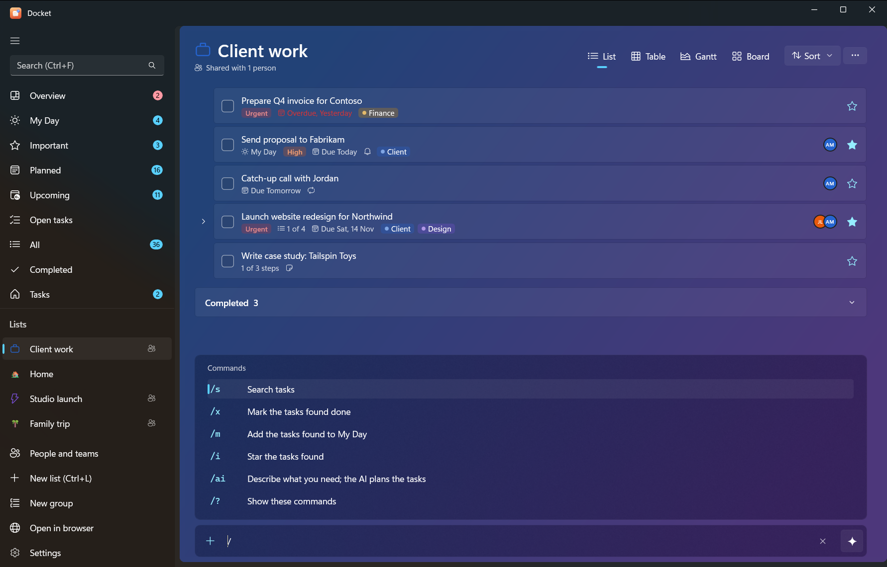
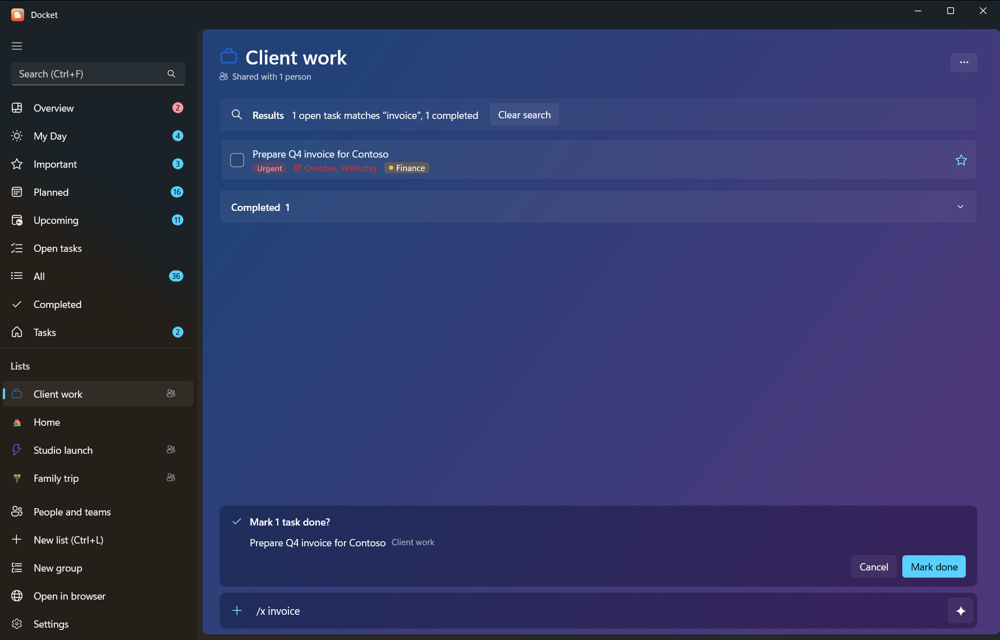

Use Docket
Quick add and commands
The add bar at the bottom of every list does three things: adds tasks, understands a few quick-add words, and runs
commands that start with /. It works the same in the Windows and Android apps, and the same words work in the CLI
and through the AI connector.


#Quick-add words
Type a task with a word or two for its date and priority. The words are taken out of the title.
| Type | Sets |
|---|---|
today | Due today |
tomorrow | Due tomorrow |
a weekday: monday … sunday, or mon, tue, wed, thu, fri, sat, sun (also on friday) | Due on the next one (today's weekday means next week) |
in 3 days | Due in that many days |
20/11 | Due on that day and month (day first). A date already past this year means next year |
!1 to !5 | Priority: 1 low, 2 medium, 3 high, 4 urgent, 5 do now |
Quick-add due dates are set for 6 pm that day. Examples:
| You type | You get |
|---|---|
Send invoice friday !3 | "Send invoice", due Friday, high priority |
Call the bank tomorrow | "Call the bank", due tomorrow |
Renew passport in 30 days !4 | "Renew passport", due in 30 days, urgent |
Dentist 20/11 | "Dentist", due 20 November |
Only one date is used, and the words must stand alone (today's is left as it is). To set a time, reminder,
repeat or star, open the task after adding it.
#Slash commands
Type / in the add bar to see the commands. Commands that act on tasks search first, show you what they found and
ask you to confirm.
| Command | Also | What it does |
|---|---|---|
/s words | /search | Search tasks |
/x words | /done | Mark the tasks found done |
/m words | /myday | Add the tasks found to My Day |
/i words | /star | Star the tasks found (Important) |
/ai what you need | Ask the AI to plan tasks (AI planning) | |
/? | /help, / | Show the commands |
For example: /x invoice finds every open task with "invoice" and, after you confirm, marks them done.
/m report puts all your report tasks in My Day.
#The sparkle button
The add bar has a sparkle button for AI. Turn it on and everything you type goes to the AI as a request, as if it
started with /ai (choose an AI in Settings > AI first). Turn it off to add tasks exactly as typed.